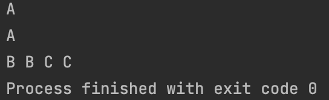

<meta charset="utf-8">
<html lang="ko">
<head>
    <link rel="stylesheet" type="text/css" href="./../style.css" />
    <title>Chap09. 힙 구조 구현</title>
</head>
<body id="tt-body-page" class="">
<div id="wrap" class="wrap-right">
    <div id="container">
        <main class="main ">
            <div class="area-main">
                <div class="area-view">
                    <div class="article-header">
                        <div class="inner-article-header">
                            <div class="box-meta">
                                <h2 class="title-article">Chap09. 힙 구조 구현</h2>
                                <div class="box-info">
                                    <p class="category">윤성우의 열혈 자료구조</p>
                                    <p class="date">2022-04-14 17:00:19</p>
                                </div>
                            </div>
                        </div>
                    </div>
                    <hr>
                    <div class="article-view">
                        <div class="contents_style">
                            <p data-ke-size="size16">힙 구조와 우선순위 큐는 다르다.</p>
<p data-ke-size="size16">하지만 이번에 구현하는 힙 구조는 구현 자체를 우선순위 큐를 염두해두고 구현했다.</p>
<p data-ke-size="size16">예를들어 힙 구조에 노드를 삽입하는 HInsert 함수는 사실상 우선순위 큐에 데이터를 푸쉬하는 Enqueue와 다를바 없으므로 힙을 구현하지만 우선순위 큐를 구현한것과 크게 다르지는 않다.&nbsp;</p>
<h2 data-ke-size="size26">&nbsp;</h2>
<h2 data-ke-size="size26"><b>아직 좀 문제가 있는 힙 구조 구현!</b></h2>
<p data-ke-size="size16">&nbsp;</p>
<p data-ke-size="size16"><b>SimpleHeap.h</b></p>
<pre class="cpp"><code>/*
 * 힙 구조 구현
 */

#ifndef CHAP09_SIMPLEHEAP_SIMPLEHEAP_H
#define CHAP09_SIMPLEHEAP_SIMPLEHEAP_H

#define TRUE 1
#define FALSE 0

#define HEAP_LEN 100

typedef char HData;
typedef int Priority; // 우선순위 정수

// node
typedef struct _heapElem
{
    Priority pr; // 값이 작을 수록 우선순위
    HData data;
} HeapElem;

typedef struct _heap
{
    int numOfData;
    HeapElem heapArr[HEAP_LEN];
} Heap;

void HeapInit(Heap *ph);
int HIsEmpty(Heap *ph);

void HInsert(Heap *ph, HData data, Priority pr);
HData HDelete(Heap *ph);

#endif //CHAP09_SIMPLEHEAP_SIMPLEHEAP_H
</code></pre>
<p data-ke-size="size16"><b>SimpleHeap.c</b></p>
<pre class="zephir"><code>#include "SimpleHeap.h"

void HeapInit(Heap *ph)
{
    ph-&gt;numOfData = 0;
}

int HIsEmpty(Heap *ph)
{
    if(ph-&gt;numOfData == 0) return TRUE;
    else return FALSE;
}

int GetParentIDX(int idx)
{
    return idx/2;
}

int GetLChildIDX(int idx)
{
    return idx*2;
}

int GetRChildIDX(int idx)
{
    return idx * 2 + 1;
}

// 두 개의 자식 노드 중 높은 우선순위의 자식 노드 인덱스 값 반환
// idx 노드가 자식이 없으면 0 반환
int GetHiPriChildIDX(Heap *ph, int idx)
{
    // 힙은 완전이진트리이므로 오른쪽 자식 노드만 존재할수 없음
    if(GetLChildIDX(idx) &gt; ph-&gt;numOfData)
        return 0;
    // LChild가 마지막 노드라면
    else if(GetLChildIDX(idx) == ph-&gt;numOfData)
        return GetLChildIDX(idx);
    else
    {
        // 우측 자식이 우선순위가 높다면
        if(ph-&gt;heapArr[GetLChildIDX(idx)].pr &gt; ph-&gt;heapArr[GetRChildIDX(idx)].pr)
            return GetRChildIDX(idx);
        else
            return GetLChildIDX(idx);
    }
}

void HInsert(Heap *ph, HData data, Priority pr)
{
    int idx = ph-&gt;numOfData+1;
    HeapElem nelem = {pr, data};

    // 트리의 마지막 위치에서부터 위로 올라가면서 비교
    while(idx != 1)
    {
        // 노드의 우선순위와 부모노드 우선순위 비교
        if(pr &lt; (ph-&gt;heapArr[GetParentIDX(idx)].pr))
        {
            // 부모와 자리 바꿈
            ph-&gt;heapArr[idx] = ph-&gt;heapArr[GetParentIDX(idx)];
            idx = GetParentIDX(idx);
        }
        else
            break;
    }
    // 삽입 노드의 최종 위치
    ph-&gt;heapArr[idx] = nelem;
    ph-&gt;numOfData += 1;
}

HData HDelete(Heap *ph)
{
    // 삭제될 root node 정보
    HData retData = (ph-&gt;heapArr[1]).data;
    // 루트로 이동후 자리 찾아갈 마지막 위치 노드 정보
    HeapElem lastElem = ph-&gt;heapArr[ph-&gt;numOfData];

    int parentIdx = 1;
    int childIdx;

    // 현재 노드와 자식들과 비교해 자리 바꿔야한다면 바꿈
    while(childIdx = GetHiPriChildIDX(ph, parentIdx))
    {
        // 자리 찾아가는 노드가 자식들보다 우선순위가 더 높음 = 자리 찾았음
        if(lastElem.pr &lt;= ph-&gt;heapArr[childIdx].pr)
            break;
        ph-&gt;heapArr[parentIdx] = ph-&gt;heapArr[childIdx];
        parentIdx = childIdx;
    }

    ph-&gt;heapArr[parentIdx] = lastElem;
    ph-&gt;numOfData -= 1;
    return retData;
}
</code></pre>
<p data-ke-size="size16">&nbsp;</p>
<p data-ke-size="size16">&nbsp;</p>
<p data-ke-size="size16">이 힙 구조는 정상적으로 작동하지만 조금 <b>문제가 있다.</b></p>
<pre class="thrift"><code>// node
typedef struct _heapElem
{
    Priority pr; // 값이 작을 수록 우선순위
    HData data;
} HeapElem;</code></pre>
<p data-ke-size="size16">위의 노드 정보를 저장하는 HeapElem 구조체를 보면 우선순위를 저장하고 있다.</p>
<pre class="reasonml"><code>void HInsert(Heap *ph, HData data, Priority pr);
</code></pre>
<p data-ke-size="size16">그리고 노드를 삽입하는 함수를 보면 노드의 우선순위의 정보를 직접 전달하고 있다.</p>
<p data-ke-size="size16">즉<b> 노드를 삽입할때마다 삽입하는 노드의 우선순위를 사용자가 입력해야 한다</b>는 것인데, 이는 말이 안된다.</p>
<p data-ke-size="size16"><b>우선순위 큐는 데이터를 삽입할때마다 가장 우선순위가 높은 데이터가 다음으로 pop 되도록하는 것이 강점</b>인데, 사용자가 우선순위를 정해서 삽입한다면 우선순위 큐의 <b>강점이 사라지는</b> 것이다.&nbsp;</p>
<p data-ke-size="size16">&nbsp;</p>
<p data-ke-size="size16">즉 재대로 된 우선순위 큐는 사용자가 우선순위 큐의 우선순위 판단의 기준을 설정할수 있어야 한다.</p>
<p data-ke-size="size16">&nbsp;</p>
<p data-ke-size="size16">&nbsp;</p>
<p data-ke-size="size16">&nbsp;</p>
<hr contenteditable="false" data-ke-type="horizontalRule" data-ke-style="style3" />
<h2 data-ke-size="size26"><b>좀 더 쓸만한 힙 구조 구현&nbsp;</b></h2>
<p data-ke-size="size16">이번에 구현한 우선순위 큐는 사용자가 노드 삽입시 데이터의 우선순위를 같이 입력해야 하는 단점을 개선했다.</p>
<p data-ke-size="size16">HInsert 함수나 HDelete 함수에서 자식과 우선순위를 비교할때 사용자가 정의한 cmp 함수로 우선순위 비교할수 있도록 했다.</p>
<p data-ke-size="size16">&nbsp;</p>
<p data-ke-size="size16"><b>UsefulHeap.h</b></p>
<pre class="c++ arduino" data-ke-language="c++"><code>/*
 * 사용자가 노드 삽입시 우선순위 정해줘야 하는 단점 개선
 */

#ifndef CHAP09_USEFULHEAP_USEFULHEAP_H
#define CHAP09_USEFULHEAP_USEFULHEAP_H

#define TRUE 1
#define FALSE 0

#define HEAP_LEN 100

typedef char HData;
typedef int (*PriorityComp)(HData d1, HData d2);

typedef struct _heap
{
    PriorityComp comp;
    int numOfData;
    HData heapArr[HEAP_LEN];
} Heap;

void HeapInit(Heap *ph, PriorityComp pc);
int HIsEmpty(Heap *ph);

void HInsert(Heap *ph, HData data);
HData HDelete(Heap *ph);

#endif // CHAP09_USEFULHEAP_USEFULHEAP_H</code></pre>
<p data-ke-size="size16"><b>UsefulHeap.c</b></p>
<pre class="xl"><code>#include "UsefulHeap.h"

void HeapInit(Heap *ph, PriorityComp pc)
{
    ph-&gt;numOfData = 0;
    ph-&gt;comp = pc;
}

int HIsEmpty(Heap *ph)
{
    if(ph-&gt;numOfData == 0) return TRUE;
    else return FALSE;
}

int GetParentIDX(int idx)
{
    return idx/2;
}

int GetLChildIDX(int idx)
{
    return idx*2;
}

int GetRChildIDX(int idx)
{
    return idx * 2 + 1;
}

// 두 개의 자식 노드 중 높은 우선순위의 자식 노드 인덱스 값 반환
// idx 노드가 자식이 없으면 0 반환
int GetHiPriChildIDX(Heap *ph, int idx)
{
    // 힙은 완전이진트리이므로 오른쪽 자식 노드만 존재할수 없음
    if(GetLChildIDX(idx) &gt; ph-&gt;numOfData)
        return 0;
    // LChild가 마지막 노드라면
    else if(GetLChildIDX(idx) == ph-&gt;numOfData)
        return GetLChildIDX(idx);
    else
    {
        if(ph-&gt;comp(ph-&gt;heapArr[GetLChildIDX(idx)], ph-&gt;heapArr[GetRChildIDX(idx)]) &lt; 0)
            return GetRChildIDX(idx);
        else
            return GetLChildIDX(idx);
    }
}

void HInsert(Heap *ph, HData data)
{
    int idx = ph-&gt;numOfData+1;

    // 트리의 마지막 위치에서부터 위로 올라가면서 비교
    while(idx != 1)
    {
        // 노드의 우선순위와 부모노드 우선순위 비교
        if(ph-&gt;comp(data, ph-&gt;heapArr[GetParentIDX(idx)]) &gt; 0)
        {
            ph-&gt;heapArr[idx] = ph-&gt;heapArr[GetParentIDX(idx)];
            idx = GetParentIDX(idx);
        }
        else
            break;
    }

    // 삽입 노드의 최종 위치
    ph-&gt;heapArr[idx] = data;
    ph-&gt;numOfData += 1;
}

HData HDelete(Heap *ph)
{
    // 삭제될 root node 정보
    HData retData = ph-&gt;heapArr[1];
    // 루트로 이동후 자리 찾아갈 마지막 위치 노드 정보
    HData lastElem = ph-&gt;heapArr[ph-&gt;numOfData];

    int parentIdx = 1;
    int childIdx;

    // 현재 노드와 자식들과 비교해 자리 바꿔야한다면 바꿈
    while(childIdx = GetHiPriChildIDX(ph, parentIdx))
    {
        // 자리 찾아가는 노드가 자식들보다 우선순위가 더 높음 = 자리 찾았음
        if(ph-&gt;comp(lastElem, ph-&gt;heapArr[childIdx]) &gt;= 0)
            break;
        ph-&gt;heapArr[parentIdx] = ph-&gt;heapArr[childIdx];
        parentIdx = childIdx;
    }

    ph-&gt;heapArr[parentIdx] = lastElem;
    ph-&gt;numOfData -= 1;
    return retData;
}
</code></pre>
<p data-ke-size="size16"><b>UsefulHeapMain.c</b></p>
<pre class="reasonml"><code>#include &lt;stdio.h&gt;
#include "UsefulHeap.h"

// 우선순위 비교 함수 cmp
int DataPriorityComp(char ch1, char ch2)
{
    return ch2-ch1;
}

int main()
{
    Heap heap;
    HeapInit(&amp;heap, DataPriorityComp);

    HInsert(&amp;heap, 'A');
    HInsert(&amp;heap, 'B');
    HInsert(&amp;heap, 'C');
    printf("%c \n", HDelete(&amp;heap));

    HInsert(&amp;heap, 'A');
    HInsert(&amp;heap, 'B');
    HInsert(&amp;heap, 'C');
    printf("%c \n", HDelete(&amp;heap));

    while(!HIsEmpty(&amp;heap))
        printf("%c ", HDelete(&amp;heap));

}</code></pre>
<p data-ke-size="size16"><b>실행결과</b></p>
<p><figure class="imageblock alignLeft" width="472" height="144" >
    <span data-lightbox="lightbox">
        
    </span>
    <figcaption></figcaption>
</figure></p>
<p data-ke-size="size16">&nbsp;</p>
<p data-ke-size="size16">&nbsp;</p>
<hr contenteditable="false" data-ke-type="horizontalRule" data-ke-style="style3" />
<h2 data-ke-size="size26">&nbsp;</h2>
<h2 data-ke-size="size26"><b>우선순위 큐의 추상 자료형 (ADT)&nbsp;</b></h2>
<p data-ke-size="size16">&nbsp;</p>
<p data-ke-size="size16"><b>void&nbsp;PQueueInit(PQueue&nbsp;*ppq,&nbsp;PriorityComp&nbsp;pc);</b></p>
<p data-ke-size="size16">- 우선순위 큐의 초기화</p>
<p data-ke-size="size16">- 우선순위 큐의 생성 후 제일 먼저 호출해야하는 함수&nbsp;</p>
<p data-ke-size="size16">&nbsp;</p>
<p data-ke-size="size16"><b>int&nbsp;PQIsEmpty(PQueue&nbsp;*ppq);</b></p>
<p data-ke-size="size16">- 우선순위 큐가 빈 경우 TRUE를 아닌 경우 FALSE를 반환&nbsp;</p>
<p data-ke-size="size16">&nbsp;</p>
<p data-ke-size="size16"><b>void&nbsp;PEnqueue(PQueue&nbsp;*ppq,&nbsp;PQData&nbsp;data);</b></p>
<p data-ke-size="size16">- 우선순위 데이터 저장. 매개변수 data로 전달된 값 저장.</p>
<p data-ke-size="size16">&nbsp;</p>
<p data-ke-size="size16"><b>PQData&nbsp;PDequeue(PQueue&nbsp;*ppq);</b></p>
<p data-ke-size="size16">- 우선순위 가장 높은 데이터 삭제</p>
<p data-ke-size="size16">- 삭제된 데이터는 반환&nbsp;</p>
<p data-ke-size="size16">- 본 함수를 호출하기 위해서는 우선순위 큐에 데이터가 하나 이상 있음이 보장되어야 함&nbsp;</p>
<p data-ke-size="size16">&nbsp;</p>
<p data-ke-size="size16">&nbsp;</p>
<hr contenteditable="false" data-ke-type="horizontalRule" data-ke-style="style3" />
<p data-ke-size="size16">&nbsp;</p>
<h2 data-ke-size="size26"><b>힙을 기반으로한 우선순위 큐 구현&nbsp;</b></h2>
<p data-ke-size="size16">이미 힙 구조를 구현했고, 해당 힙 구조는 우선순위 큐를 구현할것을 염두해두고 구현했기 때문에 우선순위 큐의 연산에 부합하는 힙의 연산을 호출해주기만 하면 된다.</p>
<p data-ke-size="size16">&nbsp;</p>
<p data-ke-size="size16"><b>PriorityQueue.h</b></p>
<pre class="cpp"><code>/*
 * 힙 구조를 기반으로한 우선순위 큐 구현
 */
#ifndef CHAP09_USEFULHEAP_PRIORITYQUEUE_H
#define CHAP09_USEFULHEAP_PRIORITYQUEUE_H

#include "UsefulHeap.h"

typedef Heap PQueue;
typedef HData PQData;

void PQueueInit(PQueue *ppq, PriorityComp pc);
int PQIsEmpty(PQueue *ppq);

void PEnqueue(PQueue *ppq, PQData data);
PQData PDequeue(PQueue *ppq);

#endif //CHAP09_USEFULHEAP_PRIORITYQUEUE_H
</code></pre>
<p data-ke-size="size16"><b>PriorityQueue.c</b></p>
<pre class="reasonml"><code>#include "UsefulHeap.h"
#include "PriorityQueue.h"

void PQueueInit(PQueue *ppq, PriorityComp pc)
{
    HeapInit(ppq, pc);
}

int PQIsEmpty(PQueue *ppq)
{
    return HIsEmpty(ppq);
}

void PEnqueue(PQueue *ppq, PQData data)
{
    HInsert(ppq, data);
}

PQData PDequeue(PQueue *ppq)
{
    return HDelete(ppq);
}</code></pre>
<p data-ke-size="size16">&nbsp;</p>
<hr contenteditable="false" data-ke-type="horizontalRule" data-ke-style="style3" />
<h2 data-ke-size="size26"><b>문제 09-1 [우선순위 큐의 활용]</b></h2>
<p data-ke-size="size16">우선순위 큐에 저장되는 자료형을 char* 형으로 변경 (typedef 선언 변경).</p>
<p data-ke-size="size16">사용자 정의 cmp 함수 변경.</p>
<p data-ke-size="size16">&nbsp;</p>
<p data-ke-size="size16"><b>UsefulHeap.h</b></p>
<pre class="cpp"><code>typedef char* HData;</code></pre>
<p data-ke-size="size16"><b>Main.c</b></p>
<pre class="cpp"><code>// 우선순위 비교 함수 cmp
int DataPriorityComp(char* str1, char* str2)
{
    return strlen(str2) - strlen(str1);
}</code></pre>
                        </div>
                        <br/>
                        <div class="tags">
                            #자료구조 #Heap #priority queue 
                        </div>
                    </div>
                </div>
            </div>
        </main>
    </div>
</div>
</body>
</html>
